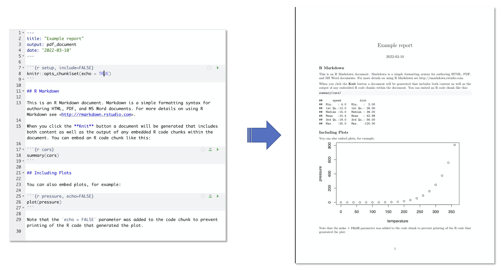
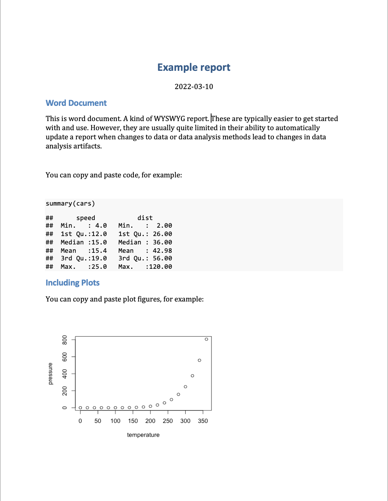
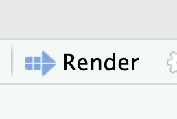
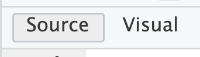
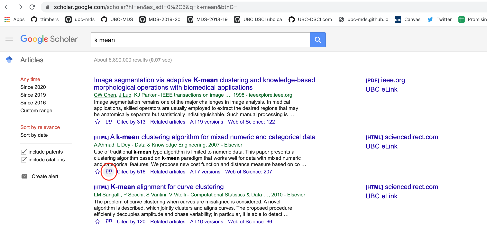
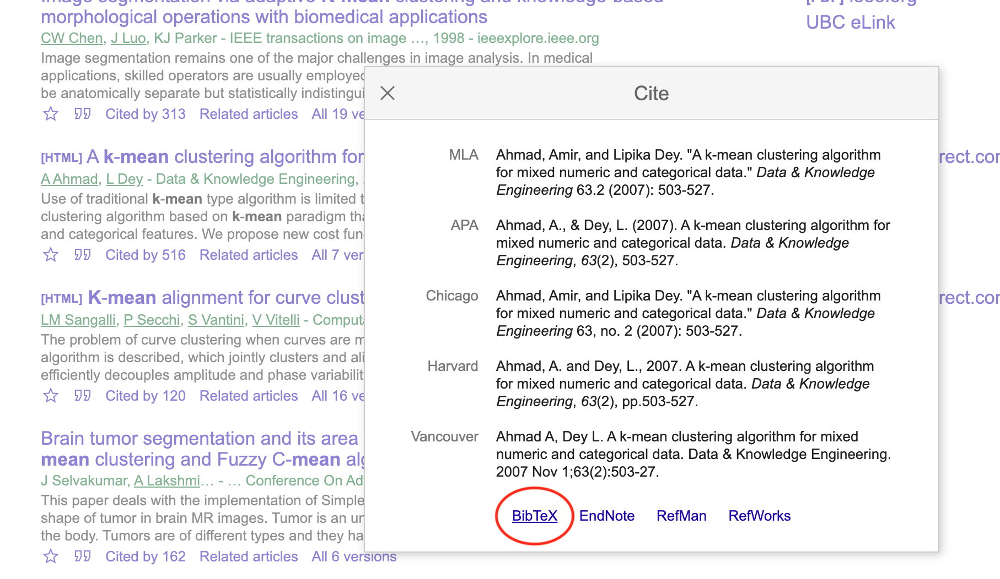
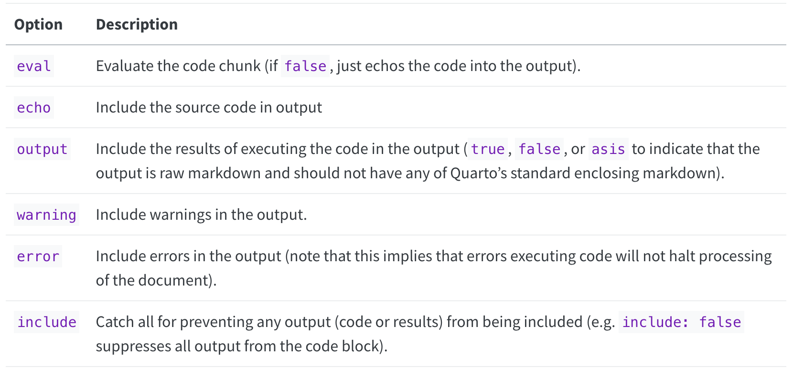

15 Reproducible reports
Learning Objectives
- Discuss the advantages and disadvantages of using literate code documents (e.g., Quarto, Jupyter, R Markdown) for writing analytic reports compared to What You See Is What You Get (WYSIWYG) editors (e.g., Word, Pages)
- Convert
.ipynband.Rmdfiles to Quarto.qmdfiles - Execute and render literate code documents
- Generate tables of contents, label and number figures and tables, and format bibliographies in a reproducible and automatted manner
15.1 Reproducible reports vs What You See Is What You Get (WYSIWYG) editors
Reproducible reports are reports where automation is used to update a report when changes to data or data analysis methods lead to changes in data analysis artifacts (e.g., figures, tables, inline text values). This automation is usually specified and controlled by code. In the field of data science, the most common implementations of this are:
- Quarto
- R Markdown
- Jupyter
- LaTeX
R Markdown and Jupyter are not completely separable from LaTeX, as they both wrap LaTeX when the desired output is PDF.
Most implementations of reproducible reports involve a process called rendering, where a document containing code and/or markup language used to specify the text formatting, document layout, figure and table placement and numbering, bibliography formatting, etc, is converted to an output more suitable for consumption (e.g., beautifully formatted PDF or html document) by some software.

This contrasts from What You See Is What You Get (WYSIWYG) software or editors (e.g., Microsoft Word, Google Docs, etc), where the document that is being edited looks exactly like the final document - there is no rendering process. WYSIWYG reports are typically easier to get started with and use. However, they are usually quite limited in their ability to automatically update a report when changes to data or data analysis methods lead to changes in data analysis artifacts. This makes them less reproducible, and can lead to errors when repeated manual updating of data analysis artifacts is needed when analysis is iterated on during development.

15.2 Introduction to Quarto
Quarto is one implementation of a reproducible reporting tool. It is very user friendly and has become very powerful - allowing a great deal of control over formatting with the ability to render to many different outputs.
Including: - PDF - html - Word - Powerpoint presentation - many more!
It is a mix of markdown primarily used for narrative text, and code chunks where code can be executed in an engine. It works very well with either R or Python as the coding engine. It has many more advanced features for customizing document outputs compared to Jupyter notebooks on their own, which is why we recommend shifting to this tool when the audience of your analysis moves beyond you and your data science team.
Quarto also can very easily convert between different kinds of reproducible report documents, making it easy to shift from working in an Jupyter notebook to this different reproducible report tool. For example,
quarto convert your_notebook.ipynbThere is a wonderful online guide for getting to know Quarto, we link to it below. In these notes, we will generally introduce this tool, and demonstrate how to:
- Anatomy of a Quarto document
- Create document sections and a table of contents.
- Add citations and a bibliography.
- Format figures and figure captions, as well as automatically number them and cross reference them in the narrative text.
- Format tables and table descriptions, as well as automatically number them and cross reference them in the narrative text.
- Execute code inline in the report narrative, so that the text will be automatically updated with the correct value when the report is rendered.
- Set the global and local code chunk options so that no code is viewable in the rendered report, just the code outputs where needed (e.g., figures and tables).
Quarto can do all this and so much more, and so if you are interested in learning more be sure to refer to the Quarto Guide.
Let’s get to know Quarto! Open RStudio and create a new Quarto document, choosing HTML as the output format. Look at the source document that is created, where is the narrative text written? Where is the code written? How does this differ from Jupyter?
There are two ways to render a document from the qmd source to the desired output. One is using a button in RStudio - the “Render” button that looks like this:

Try clicking that button and see what happens!
Another way you can do this is through code! Try running this in the terminal (replacing "FILEPATH/FILE.qmd" with the file path to where you saved this Quarto document:
quarto render your_report.qmd --to htmlRStudio has implemented a new feature for working with Quarto to make it more similar to working with Jupyter - it is called the visual markdown editor. Checkout this feature by clicking the visual markdown editor button when you have an R Markdown file open in the editor. The button looks like this:

15.2.1 Quarto in VS Code
You can also use Quarto in VS Code with R or Python. If you decide to use this editor, it is highly recommended that you use the VS Code Quarto extension. This will allow you to preview the rendered document, similar to how this can be done in RStudio. In VS Code, to preview the rendered document you click “Preview” (instead of “Render” as in RStudio), which is located at the top right-hand side of the document you are working on.
15.3 Anatomy of a Quarto document
At a basic level, a Quarto document has three parts:
YAML front matter
Markdown text
Code chunks

15.3.1 YAML front matter
The YAML front matter controls global settings for the report (document output types, code display defaults, table of contents presence and depth), as well as houses document metadata (e.g., author, date, etc). Below is an example YAML front matter which sets the:
- Title
- Author
- Date of report rendering
- Document render format to HTML
- Document have a references section and the source file for the references
- Source code to be hidden in the rendered report
- RStudio editor to show the source code view instead of the visual markdown view
---
title: "Historical Horse Population in Canada"
author: "Tiffany Timbers"
date: Sys.Date()
format: html
bibliography: references.bib
execute:
echo: false
editor: visual
---15.3.2 Markdown text
Following the yaml frontmatter section, by default, the rest of the document is considered Markdown text. If no markdown syntax is used, the text will be rendered as unformatted text. Here is a table of very common markdown formatting that you might find useful:
| Description | Markdown syntax | Output |
|---|---|---|
| Bold text | **Bold text** |
Bold text |
| Italic text | *Italic text* |
Italic text |
| Bold Italic text | ***Bold Italic text*** |
Bold Italic text |
| verbatim code (not executed) | `verbatim code` | verbatim code |
| Inline math | $E = mc^{2}$ |
\(E = mc^{2}\) |
| Display math | $$E = mc^{2}$$ |
\[E = mc^{2}\] |
See the Quarto Markdown docs for additional formatting that you might need to do: - Quarto Markdown basics
15.3.3 Code chunks
Just like Jupyter notebooks, Quarto has code cells, although they’re more commonly referred to as code “chunks” or “blocks”. These are based off fenced Markdown code blocks and always start and end with 3 backticks (```), just like in Markdown. Unique to Quarto is that the leading three backticks are followed by curly braces containing the language engine you want to run, which for r looks like this {r}. For Python, they would look like {python}. Additional metadata can be included, for example a name to reference the code chunk:
```{r my-first-code-chunk}
x <- 5
x
```All code cells are run when you render the entire document (like pressing “Run all” in JupyterLab). By default, the code in the chunk and the code output will be included in your rendered document. You can also run the code by clicking the green play button on the right-hand side of the code chunk.
15.4 Document sections and a table of contents
By using Markdown formatted headers, we can create document sections that we can link to, as well as easily create linkable table of contents. This is especially important in longer documents, that without such features are hard to navigate.
Markdown headers are specified by staring the line with one or more # characters.
A single # results in a first level header, two #’s results in a second level header, three #'s results in a third level header, and so on.
For example:
# First level header
## Second level headerWe can have up to header level 6, ######
For example we can have H3 and H4 tags, and will render like this
### Header 3 markdown
#### Header 4 Markdown15.4.1 Header 3 markdown
Header 4 Markdown
We are rending the H3 and H4 tags because this book is written in Quarto, and having it render the H1 and H2 tags will interfere with the book’s rendering and table of contents.
We’ve also disabled numbering for this book beyond H4.
15.5 Specifying the table of contents in the YAML front matter
Once the headers have been created in the document, the YAML front matter can be edited to specify that you would like a table of contents, and to what depth of header level you would like to include in it. This is done by setting the toc key to true, and the header depth the the level you want it use in the table contents using the toc-depth key (e.g., setting that to 2 would include first and second level headers in the table of contents).
These need to be set under each document type you want to render to, for example to create a table of contents with depth 3 for HTML documents you would add this to the YAML front matter:
format:
html:
toc: true
toc-depth: 3You can render more than one document type from a .qmd file, below is the example of YAML front matter for a .qmd file that renders to both HTML and PDF and set the table of contents depth to 2 for both of these:
---
title: "Historical Horse Population in Canada"
author: "Tiffany Timbers"
date: Sys.Date()
format:
html:
toc: true
toc-depth: 2
pdf:
toc: true
toc-depth: 2
editor: visual
---15.6 Citations and a bibliographies
DO NOT format references by hand, you will drive yourself nuts, especially the more references you collect! Instead use Quarto bibliography/citiation functionality. Below is a brief introduction, full docs here.
Steps to citing in Quarto
Add
bibliography: FILENAME.bibto the YAML front matterAt the very end of the
.qmdfile add a header with the word “References” (e.g.,## References)Create
FILENAME.bib(this is a plain text file) and place citations in there using bibtex citation format (see examples here).In the
.qmdmardown text, use@label(corresponds to the first string inside the{}in the.bibfile for the reference of interest) to do a in-text citation.
Getting bibtex citations
Bibtex citations for code (R & Python programming languages and their respective packages) can be obtained from the sources: - citatation() function in R (no argument will give you the citation for R, adding a package name as a string to the function call will give you the citation for that package) - For Python, I have found I have had to do this somewhat manually from package GitHub repos or docs pages (some packages exist to do this, but none seem to work flawlessly out of box). See my demo .bib file here for an example: https://github.com/ttimbers/breast_cancer_predictor/blob/master/doc/breast_cancer_refs.bib
Bibtex citations for papers can usually be found via Google scholar:
1. Search for the paper on Google Scholar
- visit https://scholar.google.com/
2. Use Google Scholar to get the citation
- Click on the quotation icon under the paper:

- Click on the BibTex link on the pop-up box:

- Copy the BibTeX citation to your .bib file
@article{ahmad2007k,
title={A k-mean clustering algorithm for mixed numeric and categorical data},
author={Ahmad, Amir and Dey, Lipika},
journal={Data \& Knowledge Engineering},
volume={63},
number={2},
pages={503--527},
year={2007},
publisher={Elsevier}
}15.7 Figures
Figures can be added by using Markdown figure syntax in the Markdown section of the Quarto documents. For example, the syntax shown below  will embed the figure in the rendered document:

Usually, we want to do a few things to our figures in reports to make them more understandable and easier to refer to and discuss. These include: - adding figure captions - give them figure numbers so we can cross reference them in the text - adjust their size so they are just big enough to understand, but also small enough to read the surrounding report text
In particular, with the assigning figure numbers, we want to do this in a automated way so that if you change the order that figures show up in your report during the editing process, you do not have to manually renumber them.
The syntax below takes our Markdown figure and gives it a caption (via adding the caption between the [ ]), gives it a label so that Quarto will do automated numbering of the figure and so you can cross reference it in the text (via #fig-some-name), and specifies the size of the figure to be 50% (via width=50%).
{#fig-banff width=50%}To cross reference the figure in the narrative of the report, we write @fig-banff when we want to refer to it. That will change to Figure 1 in the rendered report, if the figure named fig-banff is the first figure embedded in the report. This works in both R and Python.
15.8 Tables
There are several ways to add tables to Quarto documents, but the most consistent way that works across many data set sizes is to use code from the programming language you are working with to load your data into the Quarto document as a data frame object and then use the appropriate functions from your programming language to display them as a nicely formatted table. This should happen within a code chunk, specifying the code engine you are using (either R or Python). In R, that combination is usually a function from the readr package in combination with the knitr::kable function. In python, that combination is usually a reading data method from the pandas package (e.g., pd.read_csv) in combination with the Markdown function from the IPython package.
R example:
```{r}
table_to_display <- readr::read_csv("my_data.csv")
knitr::kable( table_to_display)
```Python example:
```{python}
import pandas as pd
table_to_display = pd.read_csv("my_data.csv")
Markdown(table_to_display.to_markdown(index = False))
```As with figures, with tables we usually want to do a few things to our figures in reports to make them more understandable and easier to refer to and discuss. These include: - adding table descriptions - give them table numbers so we can cross reference them in the text
Similar to with the assigning figure numbers, when assigning table numbers, we want to do this in a automated way so that if you change the order that tables show up in your report during the editing process, you do not have to manually renumber them.
Since we loaded the table data into the report using R or Python code in a code chunk, we will this time use code chunk formatting options to add the table descriptions and to gives it a label so that Quarto will do automated numbering of the tables and allow us to cross refernece them in the text (via #tab-some_name).
R example:
```{r}
#| label: tbl-my-data
#| tbl-cap: Some relevant description about the data in my table.
table_to_display <- readr::read_csv("my_data.csv")
knitr::kable( table_to_display)
```Note that we only showed the example in one language because the code chunk options for this are the same in both R and Python.
To cross reference the table in the narrative of the report, we write @tbl-my-data when we want to refer to it. That will change to Table 1 in the rendered report, if the table named tbl-my-data is the first table embedded in the report. This works in both R and Python.
15.9 Inline code
If you are wanting to include a value your code calculates in the narrative of your Quarto report, you ideally should not hard-code this value, as it may change if you change something in your analysis. Instead you want to use inline code to embed the appropriate value when your render your document. You can do this via
You can refer to values stored in code inside your markdown text using the {language_engine} code_object surrounded by backticks. For example in R you would include this in your narrative text to embed the sample mean inside the report:
```{r}
sample_mean = 5
```
The radius of the circle is `{r} sample_mean`In Python, you would replace the r with python:
```{python}
sample_mean = 5
```
The radius of the circle is `{python} sample_mean`The value for this must be a vector of length one in R, or a scalar in Python.
15.10 Code chunk execution options
There are many code chunk options that you can set. These options let you customize chunk behavior, including whether a chunk is evaluated, whether to include the output in the rendered document, etc.
A short list of code chunk options is shown below, but you can find an extensive list in the Quarto docs: - Quarto Execution Options

Source: https://quarto.org/docs/computations/execution-options.html#output-options
You can set the chunk options at either a global level (once set they will be applied to all code chunks in the .qmd file) or locally for a specific chunk (these will override the global chunk options if they are contradictory).
Global options are set in the YAML front matter at the top of the document. Setting the code chunk options so that the source code (echo) is hidden in the rendered document and that warnings (warning are suppressed) looks like this:
execute:
echo: false
warning: falseLocal chunk options are set by adding the options at the top of the code chunk. To not display warnings in a single code chunk we would use the warning: FALSE code chunk as follows:
```{r}
#| warning: false
cor( c( 1 , 1 ), c( 2 , 3 ) )
```15.11 A helpful hint for successfully working with Quarto documents
Given that you need to render the entire document to see your Markdown and LaTeX rendered, it is important to render often as you make changes. If you make an error in a LaTeX equation for example, it will stop the rendering process and you will not get to see the rendered document. So by rendering often you will know where the last changes you made are and then will be able to easily identify and fix your errors.
15.12 Quarto reports in subdirectories
When working with a more complex project, it is a good practice to split our files up into subdirectories. This means that our Quarto documents often end up in a directory called reports or analysis or something similar. This best practice can lead to headaches when rendering the document, as the relative paths for loading in data artifacts (figures and tables) can change depending on where the document is executed from.
In this course we will adopt the strategy that Quarto documents will be executed from the subdirectory that live in (e.g., reports or analysis or something similar). This is actually Quarto’s default when using the quarto render ... command. To ensure that the preview works correctly with this setup, however, we need to add an empty _quarto.yml file to our project root directory. This can be done by running touch _quarto.yml in the terminal in your project root. This document can be used to set many kinds of Quarto configurations (see all here), including saving the rendered documents to different directories (which can be useful if you plan to serve up your report as a nice, human readable HTML document on the web as documented here).
15.13 Strategies for collaborative writing with Quarto
Although Quarto is wonderful for incorporating code, and code-generated research artifacts in a reproducible manner, it is not as user-friendly for collaborative writing as other tools (e.g., Google docs). In particular, the lack of real-time collaboration and possibilities for merge conflicts that cannot be automatically resolved are the greatest challenges. Thus, to make collaborative writing efficient and effective with Quarto, we need to take a thoughtful approach to using it for this purpose. Clear communication helps, in particular with avoiding merge conflicts, however we can do more than that to make this work even better. We outline below, two strategies we can incorporate, which function to help reduce the number of merge conflicts that cannot be automatically resolved, and create a cohesive document, even with multiple authors.
15.13.1 Child documents
When multiple authors are editing a Quarto document at the same time in collaborative writing, there ends up being a good chance that a merge conflict will occur, and potentially one that cannot be automatically resolved. One way to avoid this is using communication to assign different authors to work on different sections of the document - reducing the chance that they will be editing the same lines at the same time. With this strategy however, this still can happen with sections that are adjacent to each other as Git uses the line numbers, not section headers to decide which changes are overappling changes.
Thus, an even better strategy is the use of child documents. Child documents are documents that are sourced into the main (parent) document when the document is rendered (you get one single document rendered, which includes all the content from the parent and child documents). A good idea in collaborative writing is to split each section into a separate child document. That way, each person working on a section is working on a separate document - minimizing greatly the number of potential merge conflicts.
The Includes syntax is the way to incorporate a child document into a parent document in Quarto. Below we show an example parent document (breast_cancer_predictor_report.qmd) which uses child documents to split the sections of the report into separate documents.
---
title: "Predicting breast cancer from digitized images of breast mass"
author: "Tiffany A. Timbers, Joel Ostblom & Melissa Lee"
format:
pdf
toc: true
toc-depth: 2
bibliography: references.bib
execute:
echo: false
warning: false
---
## Abstract
{{< include _abstract.qmd >}}
## Introduction
{{< include _introduction.qmd >}}
## Methods
{{< include _methods.qmd >}}
## Results & Discussion
{{< include _results-and-discussion.qmd >}}
## ReferencesThis document would live in a project structure something like this (only zooming in on the reports sub-directory:
project/
├── data/
├── reports/
│ ├── _abstract.qmd
│ ├── _introduction.qmd
│ ├── _methods.qmd
│ ├── _results-and-discussion.qmd
│ └── breast_cancer_predictor_report.qmd
├── src/
├── doc/
├── README.md
└── DockerfileAnd when rendered, (by running quarto render reports/breast_cancer_predicotr_report.qmd) a single PDF document would be rendered from the 5 separate .qmd files.
15.13.2 Smoothing
One downside to splitting collaborative writing into sections, is the the resulting document reads like it was written by several authors (because it was)! Additionally, the transitions between different sections of the report are often quite disjoint and abrupt (Stout, 2022). This is really undesirable as it makes it more difficult for the reader to understand the report. To counteract this effect of drafting a manuscript collaboratively by sections, we need to employ a smoothing process to blend the writing styles from the various authors, so that in the end, it will read as one consistently styled document, similar to documents written by a single author (Stout, 2022).
Smoothing is a step, after the initial draft is generated by separate authors, where the authors trade section assignments and edit and revise a different section than which they initially drafted. It is also advisable after this step of smoothing, to do another step, where the entire manuscript is read by at least 2-3 authors where they pay particular attention to section transitions. This extra work, results in a more cohesive, clear and easy to read document, and should be used in any collaborative writing project (Stout, 2022).
15.14 References
Sara Stoudt (2022) Collaborative Writing Workflows in the Data-Driven Classroom: A Conversation Starter, Journal of Statistics and Data Science Education, 30:3, 282-288, DOI: 10.1080/26939169.2022.2082602